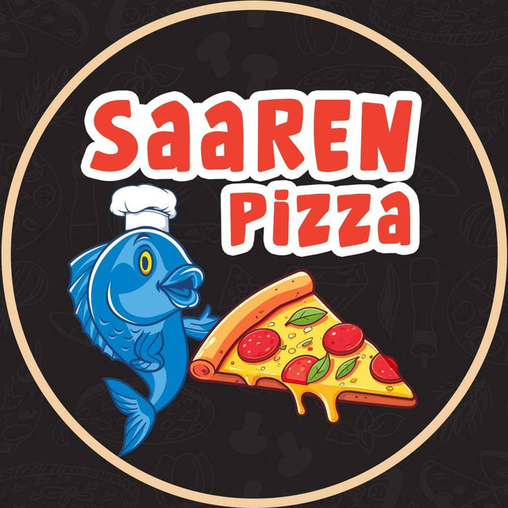

Live · Client work
Restaurant website ↗
Restaurant website and online ordering experience for a local Finnish business. Role: design and web development.
Web applicationOrderingClient work
03 / SELECTED PROJECTS
A curated collection of client work, collaborative initiatives and products in development. Status and contribution matter more than project count.

Restaurant website and online ordering experience for a local Finnish business. Role: design and web development.
Exploring interactive local information, maps and AI assistance for visitors. Role: concept and prototype development in a regional project context.

During my work at Witas, I helped host three hackathons that brought students and regional businesses together to explore practical challenges, AI tools and prototypes. Role: event coordination, facilitation and mentoring in collaboration with the Witas team.
An experimental bilingual tool for structuring business plans with AI-supported content and visual summaries.
MORE PROJECTS
Explore my other projects, products and business solutions on the Tech Jyvä website.
Discover more projects at Tech Jyvä ↗